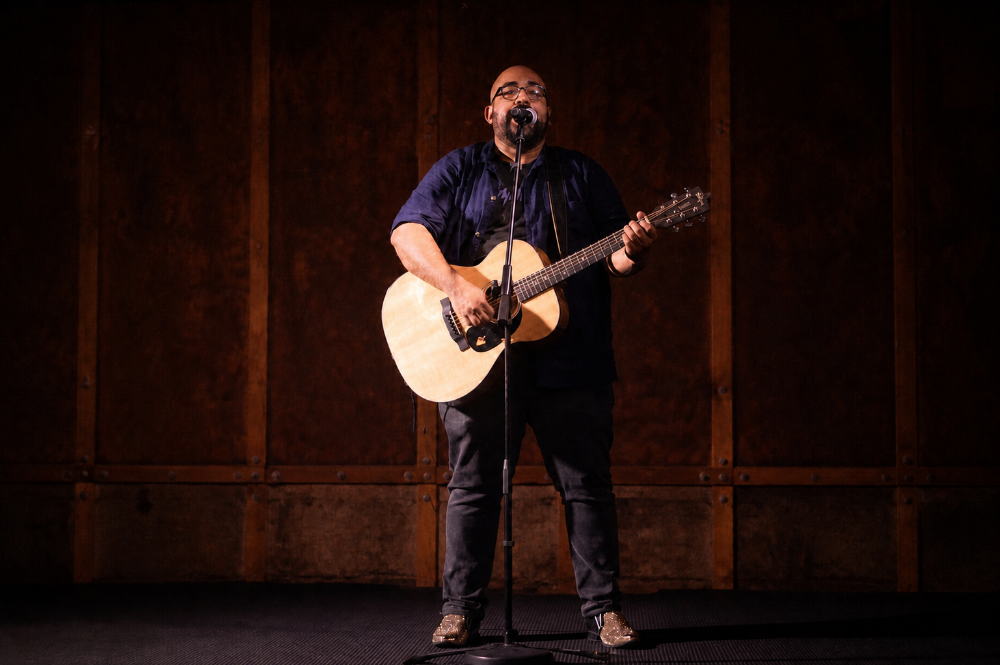

Joshua's testimony
The heart behind the journey
Music has carried me across cities, cultures, churches, and seasons of life.
I have been making music seriously since 2005, performing and leading worship in places including Boston, Dallas, Paris, and England. Through every setting, I have seen how music can create room for people to feel known, connected, and hopeful.
This trip is a mile-marker in a larger journey. It is not a final verdict about where life is heading, but an opportunity to listen, serve, learn, and explore how my gifts may be used in a wider world.
England and South Africa are the confirmed anchors of this journey. I plan to spend time in London, Manchester, and Liverpool, then serve alongside local churches and communities in South Africa, with a focus on vulnerable people groups and township communities. Depending on relationships, opportunities, timing, and available support, the journey may also include brief extensions to Spain, Greece, or Uganda. These additional destinations remain possibilities, not confirmed plans.

“My hope is to bring people together, create harmony, and make people feel seen. I believe travel can deepen the way I write, worship, serve, and understand the world.”